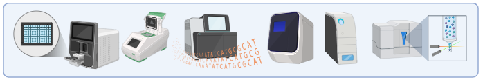
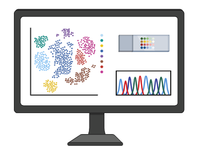
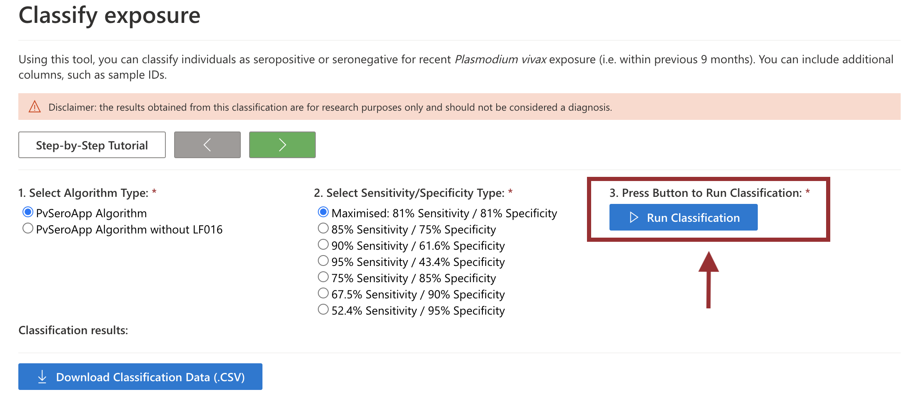
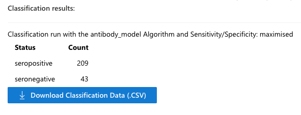
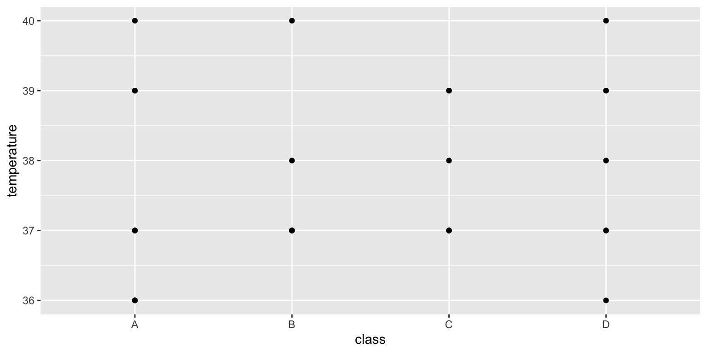
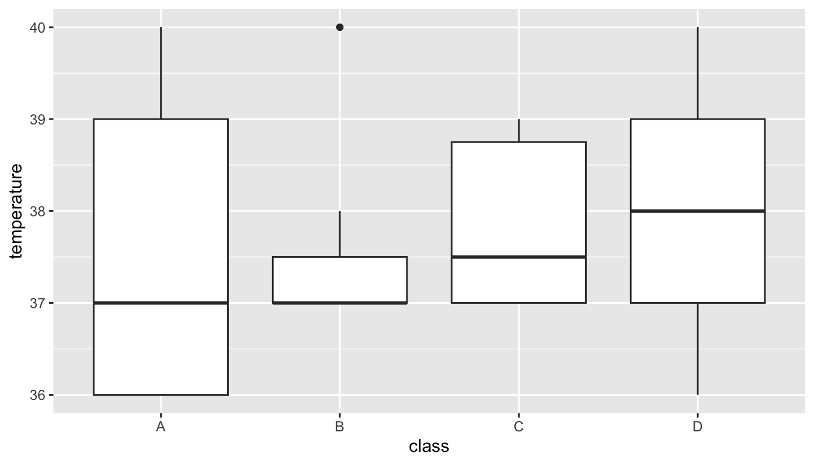
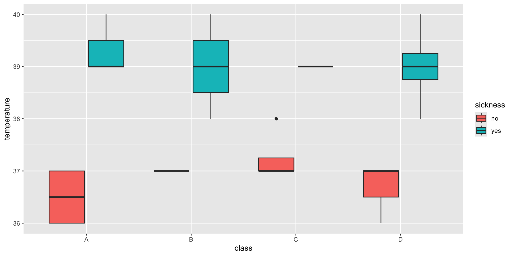
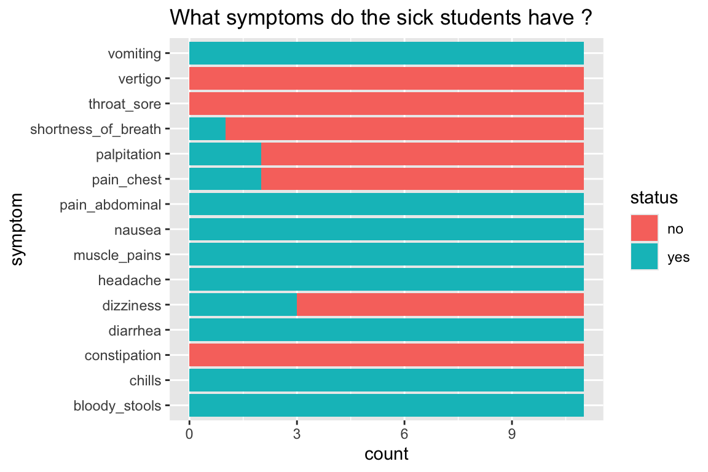
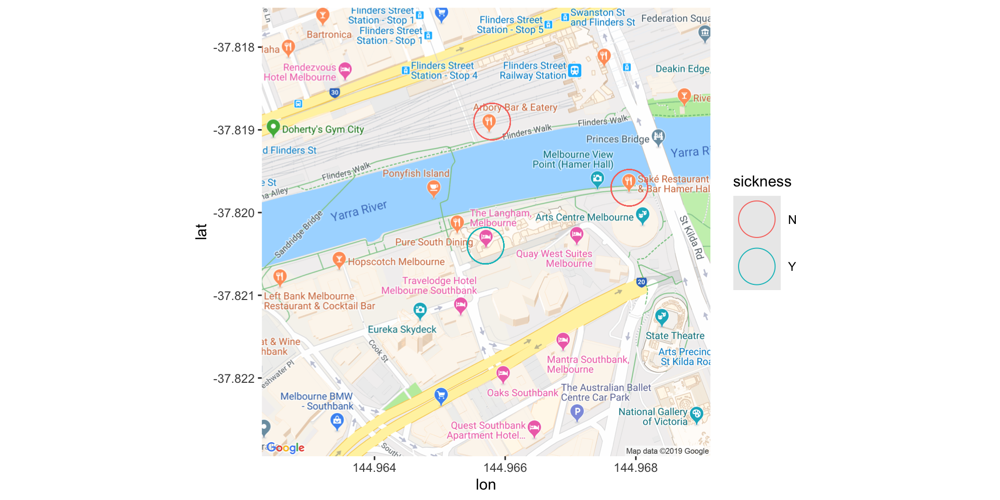

| firstname | class | height | weight | age | sex | temperature | sickness | shortness_of_breath | chills | palpitation | bloody_stools | pain_chest | abdominal_cramps | dizziness | nausea | vomiting | vertigo | cough | fever | diarrhea | constipation | headache | pain_abdominal | throat_sore | muscle_pains |
|---|---|---|---|---|---|---|---|---|---|---|---|---|---|---|---|---|---|---|---|---|---|---|---|---|---|
| Paul | A | 61.7 | 42 | 12 | M | 40 | yes | no | yes | yes | yes | yes | yes | no | yes | yes | no | yes | yes | yes | no | yes | yes | no | yes |
| Julie | C | 60.0 | 45 | 10 | F | 39 | yes | no | yes | no | yes | no | yes | no | yes | yes | no | no | yes | yes | no | yes | yes | no | yes |
| Nat | B | 60.5 | 44 | 11 | F | 37 | no | no | no | no | no | no | no | yes | no | no | no | no | no | no | no | no | no | no | no |
| Damien | D | 61.7 | 43 | 12 | M | 39 | yes | no | yes | no | yes | no | yes | no | yes | yes | no | no | yes | yes | no | yes | yes | no | yes |
| Eric | A | 62.0 | 42 | 13 | M | 36 | no | yes | no | no | no | no | no | yes | no | no | no | no | no | no | no | no | no | no | no |
| Simon | A | 62.3 | 45 | 12 | M | 39 | yes | no | yes | no | yes | no | yes | no | yes | yes | no | no | yes | yes | no | yes | yes | no | yes |
The Other Side of Science: Where Data Tells the Story
Presented by
Dr Dionne C. Argyropoulos
Moving from the lab to the computer
Practical laboratory work

Computational/Data analysis

How can we use our lab data?
Using the results of our experiments, or from other sources, we obtain data!
We use many different languages to communicate what we would like to see from our data.
These are called coding languages or simply coding.
What is coding and what is R ?
Coding involves writing instructions that a machine or computer can understand to perform a task.


R is coding language used in statistics, data science and many other disciplines. It is also very powerful tool for visualising data.
Why should you learn R ?
⚖️ R is free, open source and everyone can access
🥳 It can do so many things
📚 Lots of resources to learn and perform tasks, with a very large user community
🧑🎓 You can get a super cool job ! It’s a fantastic skill that is highly sought after in the work force.
Example 1: Using Raw Luminex Data to Detect Infection
What are antigens and antibodies?
Antigens are foreign substances, such as bacteria, fungi, viruses and toxins.
Antibodies are protective proteins produced by your immune system. They attach to antigens and remove them from your body.
Immunologists use machines like the MAGPIX to test antibody responses to multiple antigens in a blood sample!
My work at WEHI
Because I like coding, I was tasked with making a website application to convert the raw data into a format that can be used to predict whether a person has a malaria infection or not!
My work at WEHI
Because I like coding, I was tasked with making a website application to convert the raw data into a format that can be used to predict whether a person has a malaria infection or not!
My work at WEHI
Because I like coding, I was tasked with making a website application to convert the raw data into a format that can be used to predict whether a person has a malaria infection or not!
Example 2: An Infectious Disease Outbreak
What are infectious diseases?
🦠 Infectious diseases are caused by certain microorganisms, such as bacteria, viruses, parasites or fungi, and will make people (or animals) sick when they are exposed to these microorganisms.
💭 Most microorganisms don’t make us sick, but some do, and these are known as pathogens.
🤧 There are lots of different ways that you might get an infectious disease. Some ways include breathing respiratory droplets, eating contaminated food or water, insect bites and many many more !
When do infectious diseases cause outbreaks?
📚The World Health Organisation definition of an outbreak:
💡 “occurence of disease in excess of normal”
This might be because of a new pathogen, bringing pathogens to new areas, a mutating pathogen.
Many infectious diseases now have vaccines that mean outbreaks to these pathogens occur much less frequently (for example: measles, chicken pox, influenza etc.)
How can we analyse outbreaks?
What is the problem ?
What is the cause?
What can we do to make the situation better?
The situation
The excursion
Unknown illness causes students to fall ill at local school.
Local authorities are unsure of the cause of this outbreak, but it appears to be linked to a recent excursion to Melbourne CBD
A few days earlier, students at a local school went into Melbourne to see an exhibition at the National Gallery of Victoria.
🚌 At 8am, they took the bus to the NGV.
🎨 They were in the gallery from 9am - 12pm.
🍲 They had lunch from 12pm - 2pm at three different locations
🧑🎨 They went back to the gallery for another exhibition between 2 -4 pm
🏡 At 4pm they were back on the bus to go home
You have been given some information in a dataset
Including:
Name
Class
Age
Sex
Height
Weight
Was the student feeling sick
What were their symptoms
And we can then ask questions with these data in R !
Data Visualisation: Our gateway to interpreting our data
An important variable to look at when it comes to disease would be temperature.
We can use a dot or point graph to identify the temperature (y-axis) of each individual in our class (x-axis).

A boxplot summarising temperature in the four classes

A boxplot summarising temperature in the four classes
What does temperature tell us about how the students were feeling?
Let’s focus on the student’s symptoms
There were 11 students that were sick, and 18 that were not sick.
But what is making the students sick ?
What symptoms do the sick students have ?
What does this graph tell us?
What are the symptoms of those that are sick?
What might be some causes of illness that give these symptoms?
Likely cause…
Salmonella
What is salmonella?
A bacterial infection
Commonly from contaminated food
Examples…undercooked chicken, raw egg, insufficient cleaning
You can start to feel sick within 6 to 36 hours after eating
But how did the students get sick ?
Where did the students get sick?
🎨 At the gallery?
🚌 On the bus?
🍲 At lunch?
WAIT ! We have some more information
🍲 We have just been sent some information about where the student’s ate lunch !
They ate at three different restaurants !
Using R, we can plot where the students ate their lunch…
This was based on a real life outbreak in Melbourne !

Other Examples Where R and Coding Can Be Harnessed!
Other Examples Where R and Coding Can Be Harnessed Include:
You can make your own PDF or Word Document
Applications
Websites
Complex analyses and statistics (main purpose)
This presentation!